About Me
I turn addon ideas into playable systems.
I’m a Minecraft Bedrock addon developer with a focus on quality, functionality, and player experience. I specialize in furniture ports, decorative blocks, custom mobs, weapons, utility systems, and custom UI design — creating clean and intuitive interfaces for addons like MrCrayfish Furniture and DecoDrop. I also handle updates, bug fixes, and compatibility improvements across multiple projects.
Skills
What I work with
Bedrock Add-ons
Custom behavior packs, resource packs, items, blocks, tools, furniture, and gameplay systems.
Scripted Mechanics
Scripted mechanics, interactive systems, player events, and configurable gameplay features.
Custom UI
Configuration menus, addon books, interface textures, forms, and player-friendly settings.
Optimization
Bug fixing, compatibility improvements, cleaner updates, and better user experience.
Personal Work
Featured Personal Add-ons
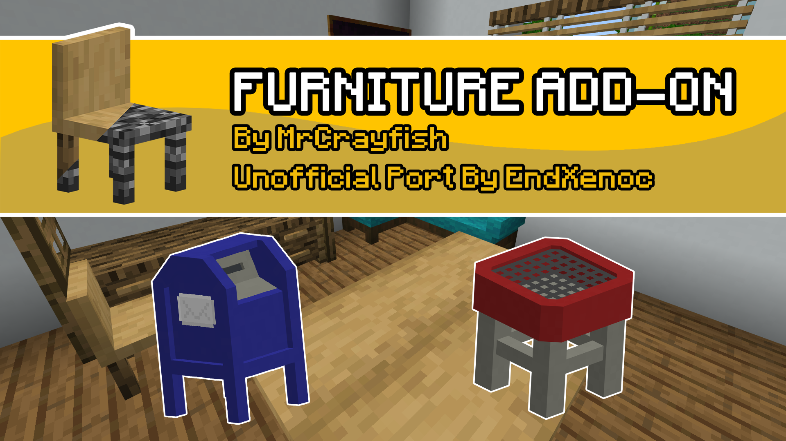
MrCrayfish Furniture (Unofficial Port)
Unofficial Port of MrCrayfish's furniture 1.19 (Java) to Bedrock
Furniture • Functional Blocks • Utility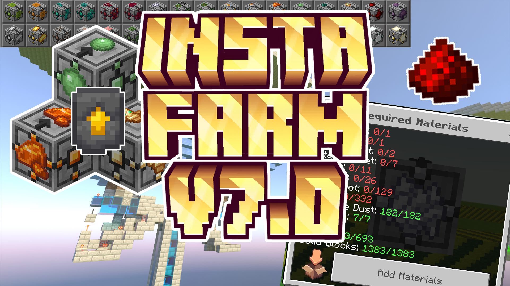
Insta Farm
Insta Farm Addon allows players to easily create farms and redstone mechanisms. Simply place the block, add materials and build farms - upgrade them for more efficiency!
Building • Structure Generation • Redstone • Utility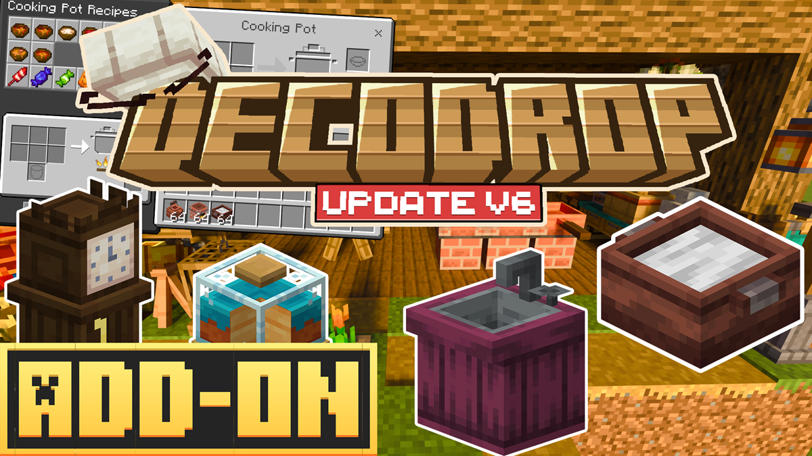
DecoDrop
DecoDrop adds hundreds of decorative blocks like chairs, tables, lamp posts, and lights. It also includes food, a pot, a teapot, and an oven, each used to craft different recipes.
Furniture • Decoration • Functional Blocks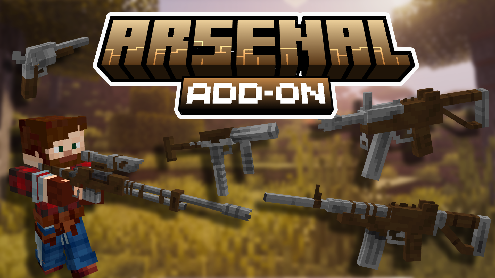
Arsenal | 3D Guns
Arsenal adds firearms, including rifles, SMGs, and a revolver, with custom ammo, particles, and simple third-person handling animations.
Weapons • Combat • Guns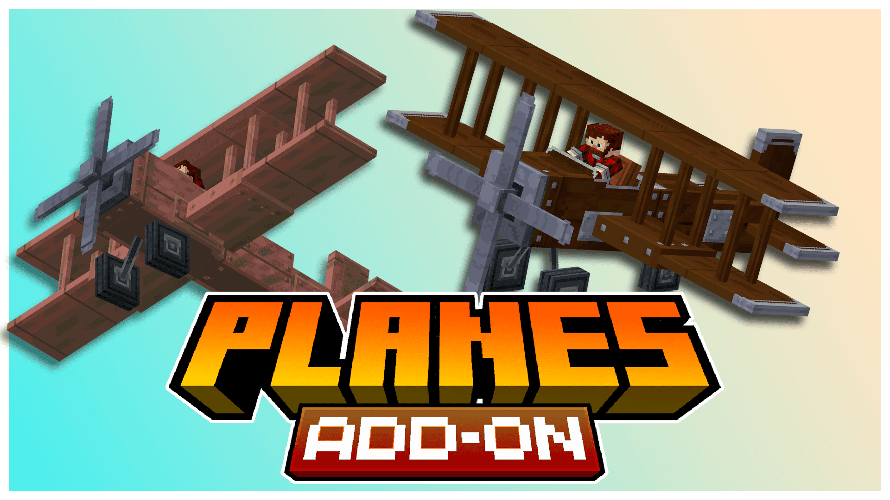
Planes Add-On
Adds wooden and copper planes to Minecraft, offering a fun and immersive way to travel across your world. Build, fly, and explore from the skies!
Transport • Vehicles • Exploration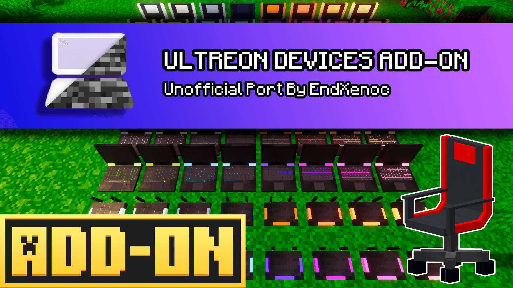
Ultreon Devices (Unofficial Port)
Adds decorative office devices to your world: laptops (open/close), printers, routers, and office chairs you can sit on. A simple aesthetic port of Ultreon Devices for Bedrock.
Furniture • Decoration • Functional Blocks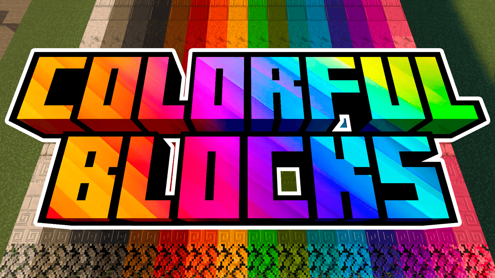
Colorful Blocks
This addon expands Minecraft’s creative options by adding blocks, slabs, stairs, walls, and fences in all 16 colors. Craft them in Survival mode using the Painting Table and the Stonecutter.
Decoration • Building • Creative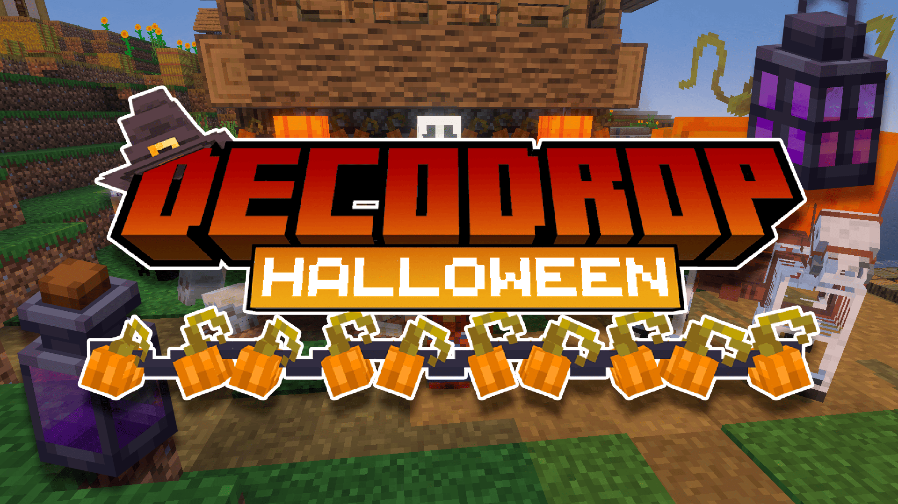
DecoDrop Halloween Expansion
DecoDrop Halloween Expansion adds spooky decorations like skulls, lanterns, lights, masks, and a Pumpkin Wagon. It expands the main DecoDrop addon with a festive Halloween touch!
Furniture • Decoration • Transport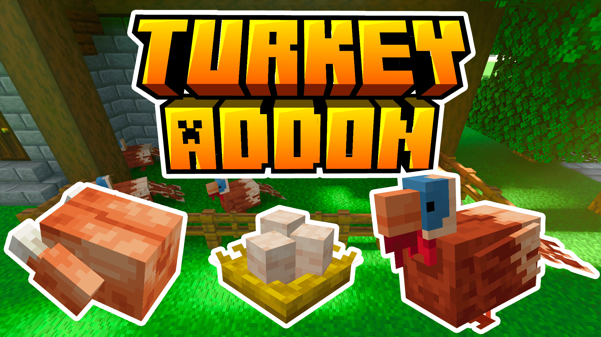
Turkey for MCPE
The Turkey Add-on adds turkeys to forests, birch forests, dark oak forests, plains, taigas, and meadows. Breed, collect eggs, and cook with unique 3D items to enrich your world.
Animals • Farming • Food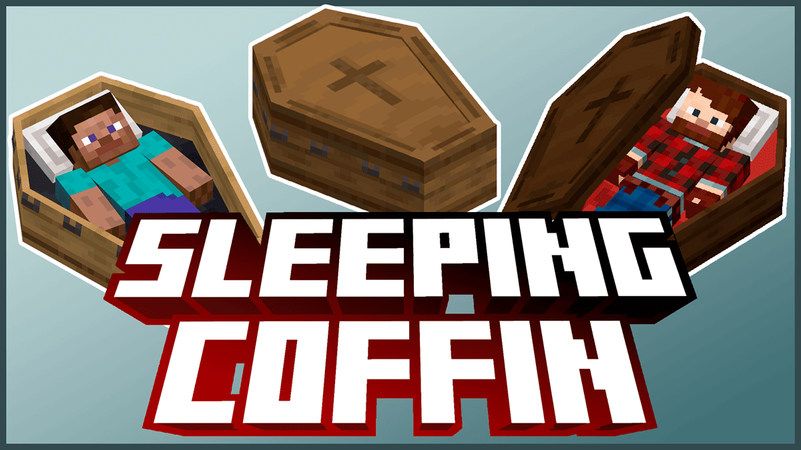
Sleeping Coffins
Adds decorative coffins that players can sleep in to skip the night. A stylish and spooky alternative to beds, available in all wood types.
Decoration • Sleeping • Furniture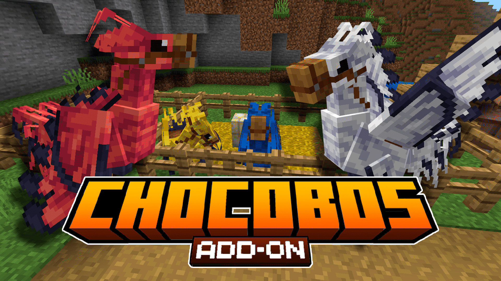
Chocobos Add-On (Achievement friendly)
Adds tameable and rideable Chocobos that spawn in plains. They eat wheat seeds, can wear armor, follow or sit, and lay eggs that hatch faster on hay blocks. A fun and faithful companion for your adventures!
Mobs • Mounts • Animals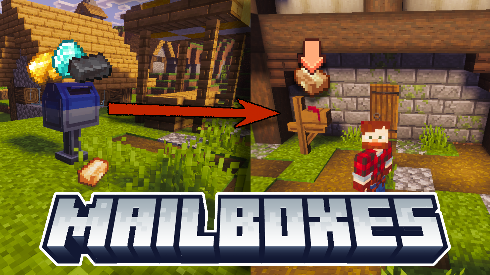
Mailboxes | Send packages everywhere
Mailboxes V1.3.0: Added pale oak mailboxes, pending package system, password-protected settings, performance improvements, and new postman hats. Mailboxes now load dynamically for better optimization.
Utility • Storage • Transportation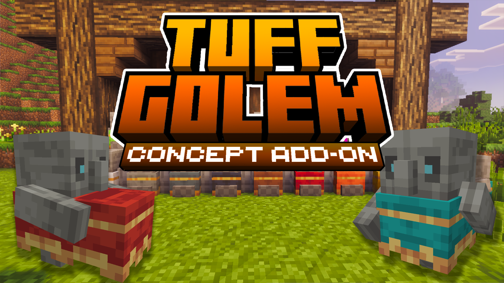
Tuff Golem | Concept Addon
A small concept add-on of the Tuff Golem: summon it like any golem, customize its cloth color with carpets, let it hold items only when dressed, make it sit, turn it into a statue with honeycomb, and revive it with an axe.
Mobs • Golems • Decoration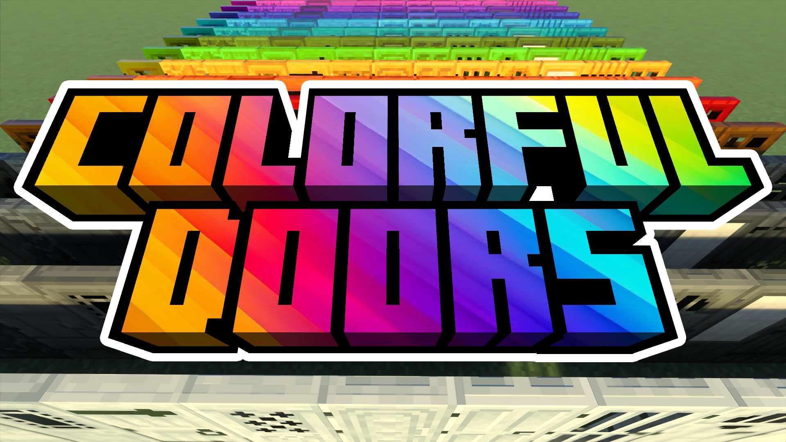
Colorful Doors
Colorful Doors adds vanilla-style doors in all 16 in-game colors. This version introduces animated doors.
Decoration • Building • Redstone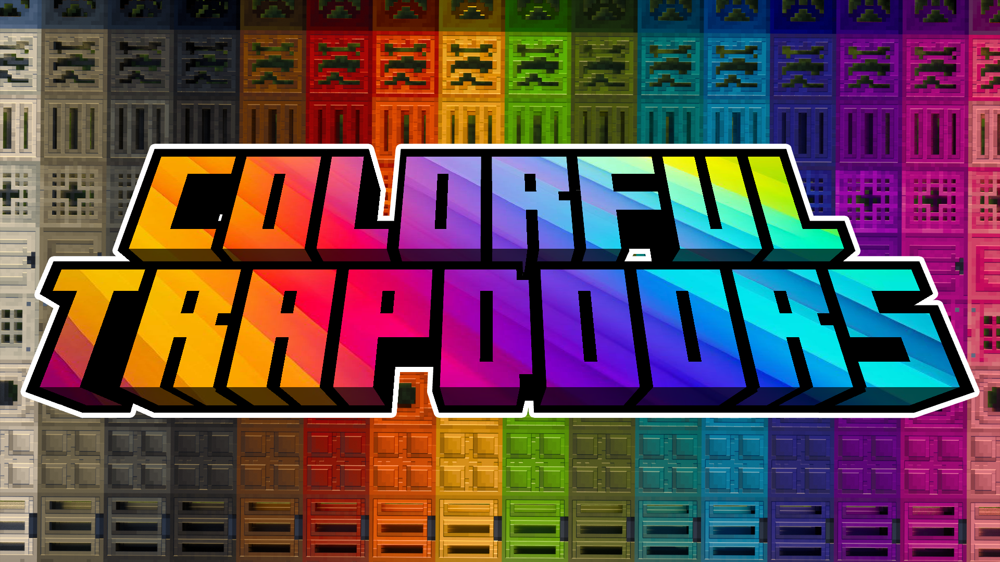
Colorful Trapdoors
Colorful Trapdoors allows dyeing all vanilla trapdoors in the 16 vanilla colors using the new crafting table.
Decoration • Building • RedstoneWorkflow
How I usually build an add-on
Idea & Gameplay Design
I define the concept, the target audience, and the core gameplay loop.
Systems & UI
I implement the behavior, design the UI, configure settings, and ensure everything works smoothly.
Testing & Polish
I test extensively, optimize performance, fix bugs, and improve based on user feedback.
Contact
Let’s build something for Minecraft Bedrock.
I'm available for collaborations, and custom systems. Let's bring your ideas to Bedrock.